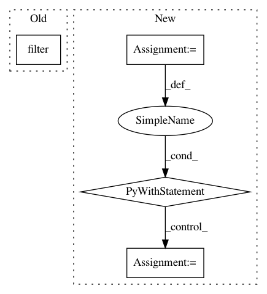

e252f8a31f777d0ff5aaa03ade04a1522c3d3cd1,sounds/management/commands/copy_downloads.py,Command,handle,#Command#,34
Before Change
if last_downloads.count():
start = last_downloads[0].created
start = start.replace(hour=0, minute=0, second=0)
PackDownload.objects.filter(created__gt=start).delete()
PackDownloadJson.objects.filter(created__gt=start).delete()
else:
first_downloads = Download.objects.order_by("created")
After Change
.prefetch_related("pack__sound_set")
start += td
more_downloads = downloads.count() != 0
with transaction.atomic():
for download in downloads.all():
// create both PackDownload and PackDownloadJson
sounds = []
pd = PackDownload.objects.create(user=download.user, created=download.created, pack_id=download.pack_id)
pds = []
for sound in download.pack.sound_set.all():
pds.append(PackDownloadSound(sound=sound, license=sound.license, pack_download=pd))
sounds.append({"sound_id": sound.id, "license_id": sound.license_id})
PackDownloadSound.objects.bulk_create(pds, batch_size=1000)
PackDownloadJson.objects.create(user=download.user, created=download.created, pack_id=download.pack_id, sounds=sounds)
logger.info("Copy of Download for %d sounds of the date: %s " % (downloads.count(), start.strftime("%Y-%m-%d")))
logger.info("Copy Downloads to new PackDownload finished")
In pattern: SUPERPATTERN
Frequency: 3
Non-data size: 4
Instances
Project Name: MTG/freesound
Commit Name: e252f8a31f777d0ff5aaa03ade04a1522c3d3cd1
Time: 2017-12-01
Author: andres.ferraro@upf.edu
File Name: sounds/management/commands/copy_downloads.py
Class Name: Command
Method Name: handle
Project Name: Scitator/catalyst
Commit Name: aab3902d4a7d55f5a86058854adc36b8a12c873f
Time: 2019-05-20
Author: ekhvedchenya@gmail.com
File Name: catalyst/dl/callbacks/base.py
Class Name: OptimizerCallback
Method Name: on_batch_end